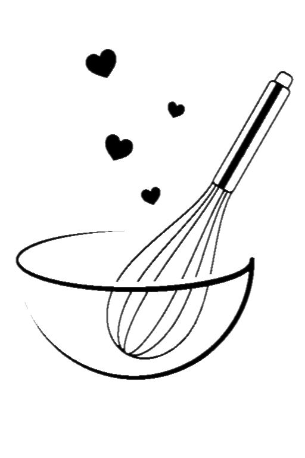

Dicen que comer es una necesidad, pero cocinar es un arte.
La pastelería Italiana reúne las técnicas, recetas y los valores que conforman la rica y diversa tradición en producción de pasteles y postres italianos.
Los más tradicionales son: la sfogliatelle, el strufolli y el cannoli, este último, originado en Sicilia y con la influencia árabe del mazapán, se ha convertido en una bandera de la pastelería italiana.
Esperamos que disfrutes de nuestros productos!
